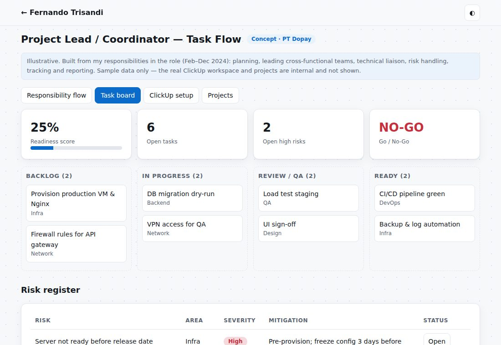
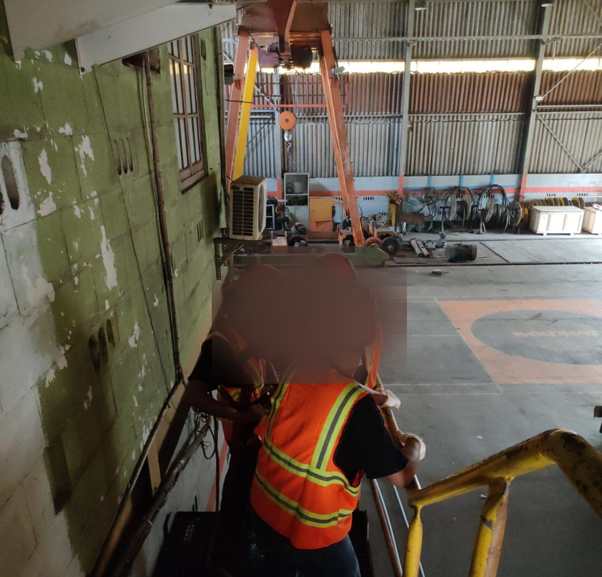
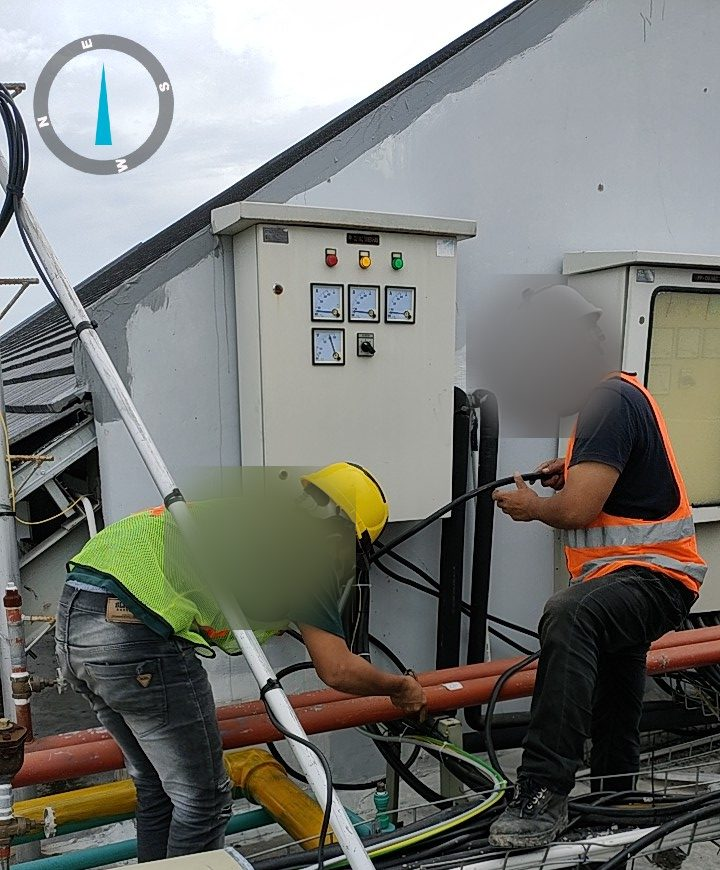

Fernando Trisandi
8+ years in network infrastructure, telecommunications and system integration. Expertise in WAN/LAN/VLAN, IoT/LoRaWAN, CCTV analytics and application lifecycle coordination, with strong Agile/Scrum execution and stakeholder management.
- Location Bandung, Indonesia
- Phone +62 812-2076-5119
- Email trisandifernando@gmail.com
- LinkedIn /in/fernandotrisandi
- GitHub Andosilaen
- Work mode Remote or onsite
Key technical achievements
Highlights across infrastructure, automation and IoT.
Project Lead Task Flow
Responsibility flow, task board with Go/No-Go, ClickUp setup and project types.
OpenIoT LoRaWAN, CCTV & LPR
Input→output install flow, AS923 scan, uplink flow, LPR, per-project documentation.
OpenIT Support & Network
Factory network map, helpdesk flow and illustrations (VLAN, cabling, rack, backup).
OpenOffice IT Support
Office network impact map, troubleshooting tree and maintenance checklist.
OpenExperience
Most recent first.
Project Lead / Coordinator
- Planned and coordinated technical execution: architecture readiness, task allocation and resource planning.
- Led cross-functional teams (developers, designers, QA) for application deployment and infrastructure integration.
- Technical liaison between development, infrastructure/network engineers and stakeholders.
- Identified and mitigated risks in server readiness, connectivity, deployment dependencies and stability.
- Task tracking and reporting with Jira, Trello and Asana; configured and validated servers, routers and switches.
IT Coordinator & Support Specialist — In-Building Coverage (IBC)
- Liaison between field engineers, vendors, clients and internal stakeholders on enterprise and industrial projects.
- Managed WAN/LAN/VLAN; configured routers, managed switches, access points and LoRaWAN gateways/end nodes.
- Oversaw CCTV installation, configuration and analytics, including speed detection.
- Participated in LoRaWAN IoT deployments for PDAM Gianyar (Bali) and Yogyakarta, from site survey to handover.
IT Support / Network Administrator
- Managed and troubleshot WAN/LAN/VLAN in an industrial manufacturing environment.
- Configured routers, managed switches and wireless access points; hardware and software support.
- Kept embroidery-machine production software running for uninterrupted manufacturing.
- Installed and maintained CCTV; firewall configuration, antivirus updates and backup management.
IT Support
- Maintained office network (routers, managed switches, access points) and provided hardware/software support.
- Installed and updated software; diagnosed PCs, printers, routers and peripherals; preventive maintenance.
Skills & tools
WAN, LAN, VLAN, Mikrotik, DNS, DHCP, VPN, Firewall
Linux (Debian, Ubuntu, CentOS), Nginx, Apache
Docker, KVM/QEMU, VirtualBox
AWS, Azure, Google Cloud
LoRaWAN, gateways, CCTV analytics
Bash, Cron, backup & log automation
MySQL, PostgreSQL, MSSQL
English (business), Bahasa Indonesia (native)
Education
Prototypes
Interactive concept demos inspired by my work at each company. All data is illustrative or anonymised — no client or company data is shown.
Deployment Readiness Board
Kanban with drag-and-drop, risk register and a live readiness score.
OpenLoRaWAN Monitor & Handover
Two work streams: IoT LoRaWAN and CCTV, each with a delivery flow linked to field photos.
OpenNetwork Map & Helpdesk
Clickable factory topology with VLANs and a small ticket queue.
OpenOffice Network & Troubleshooting
Office network impact map, troubleshooting tree and maintenance checklist.
OpenProject documentation
Field documentation lives inside each prototype, linked to its delivery steps. Faces are blurred and location stamps removed.
1 · PT Dopay

2 · PT Nexwave

CCTV installation documentation
Equipment, installation process and team — survey, power panel, cabling, camera mounting, NVR.
Open documentation
IoT LoRaWAN documentation
Pole base, panel wiring, antenna, gateway and smart-meter sensor — from survey to handover.
Open documentation